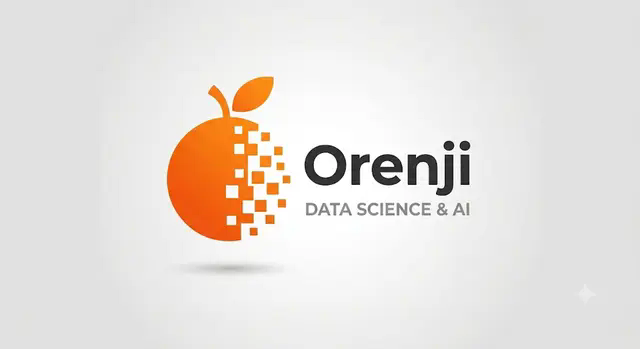

Entender
Descobrimos o que seus dados revelam.

Vamos conversar?DATA SCIENCE • INTELIGÊNCIA ARTIFICIAL • AUTOMAÇÃO
Estratégia, análise e inteligência artificial para empresas que querem decidir melhor.
Descobrimos o que seus dados revelam.
Tornamos o complexo em insights claros.
Construímos soluções que ganham escala.
Apoiamos decisões melhores e crescimento contínuo.
SOLUÇÕES
Da organização dos dados à automação de decisões, criamos soluções que acompanham a realidade de cada empresa.
APLICAÇÕES
Visibilidade
Eficiência
Inteligência
SOBRE A ORENJI
Unimos estratégia, engenharia de dados e inteligência artificial para transformar informações dispersas em clareza, eficiência e ação. Trabalhamos de forma próxima, traduzindo tecnologia em soluções adequadas à maturidade e aos objetivos de cada negócio.
Conte seu desafio ↗INSIGHTS
VAMOS CONVERSAR
Conte um pouco sobre o seu negócio. A conversa começa pelo problema, não pela tecnologia.